首页
上一页
291
292
293
294
295
296
296
297
298
299
300
301
下一页
末页
defanive2
无尽黑夜
14
这个按钮需要实现的电路功能：
1、激活左边的发射器，点燃TNT矿车
2、在正确延时一会后，激活右边的发射器，发射水，保护电路
3、在爆炸发生前，打开发射舱的陷阱门，使得爆炸可以冲击到玩家
4、再延时过一会后，重新给一个信号给右边的发射器，收回水
按钮的电路相对来说要简单很多，只需要正确调整延时即可
——来自 MCLive
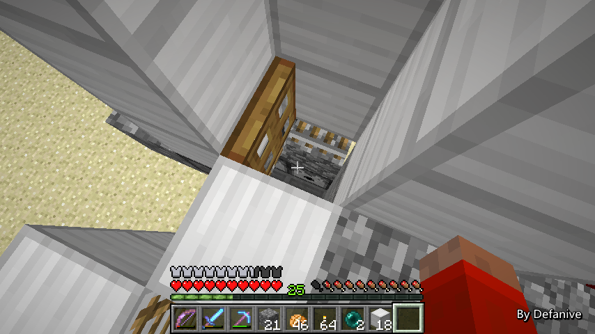
29902楼
2014-07-09 22:03
defanive2
无尽黑夜
14
首先把按钮的信号一路引下来
——来自 MCLive
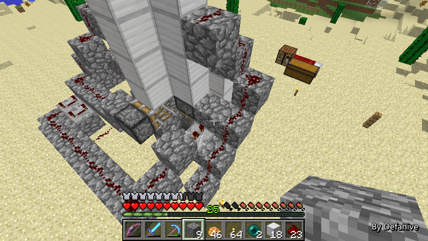
29903楼
2014-07-09 22:05
defanive2
无尽黑夜
14
首先我们完成功能1
很简单，只需要把信号给到装打火机的发射器即可
——来自 MCLive
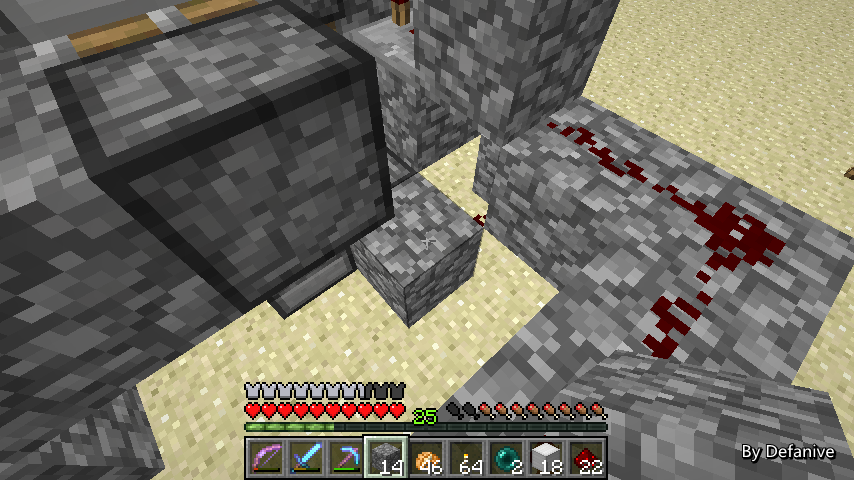
29906楼
2014-07-09 22:08
defanive2
无尽黑夜
14
接下来实现功能2
将信号经过1tick的中继器之后，给到装水桶的发射器
在鼠标所指的地方放上一个方块即可
——来自 MCLive
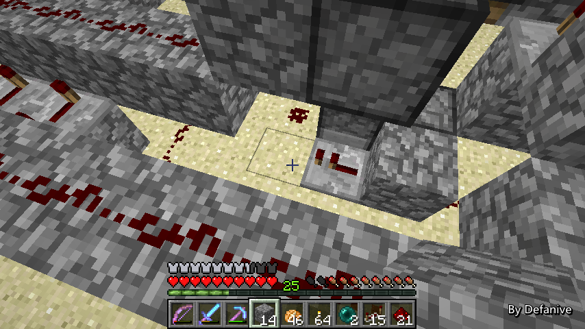
29907楼
2014-07-09 22:10
defanive2
无尽黑夜
14
接下来实现功能3
将按钮的信号延时4tick之后给到陷阱门旁边的方块上
这样在爆炸的一瞬间陷阱门是打开的
爆炸产生的动力就能够转移到玩家身上
——来自 MCLive
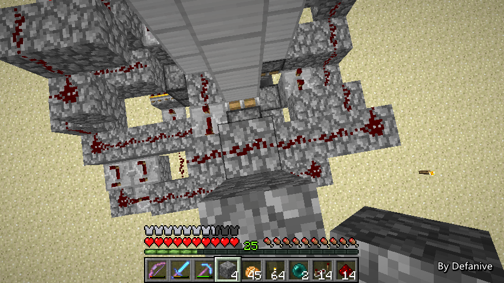
29909楼
2014-07-09 22:13
defanive2
无尽黑夜
14
接下来最后一步就是完成功能4
把按钮的信号连接5个4tick中继器给到水桶发射器上
即可实现在发射结束后把水重新收回
——来自 MCLive
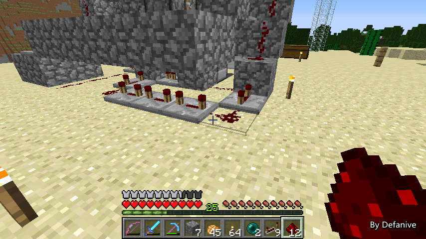
29914楼
2014-07-09 22:22
defanive2
无尽黑夜
14
按钮的电路就做好了！
接下来只需要延长发射管，然后这样铺上陷阱门用于控制发射不偏移即可
——来自 MCLive
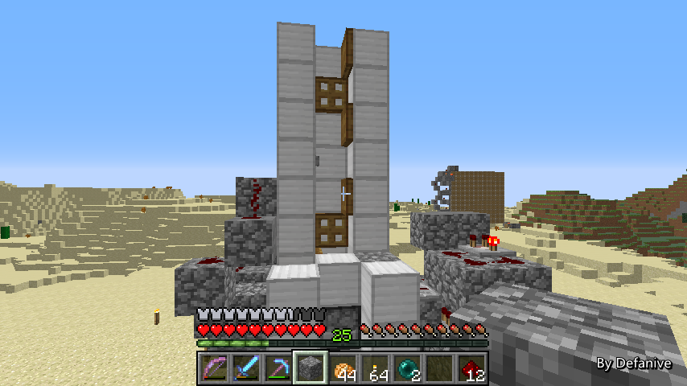
29917楼
2014-07-09 22:24
defanive2
无尽黑夜
14
接下来根据发射强度延长发射管以及里面的陷阱门即可
——来自 MCLive
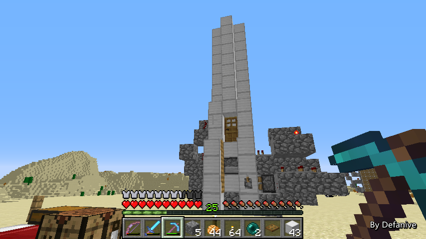
29924楼
2014-07-09 22:33
defanive2
无尽黑夜
14
接下来我们脱下全身装备，用9个TNT矿车来进行一次测试吧！
由于上面新的空间站还没有做
而9个TNT矿车不可能达到旧的空间站的高度
所以这次发射我们是为科学献身 = =
不过在新空间站完工并且调整好TNT矿车数量之后
去空间站就会很安全了
——来自 MCLive
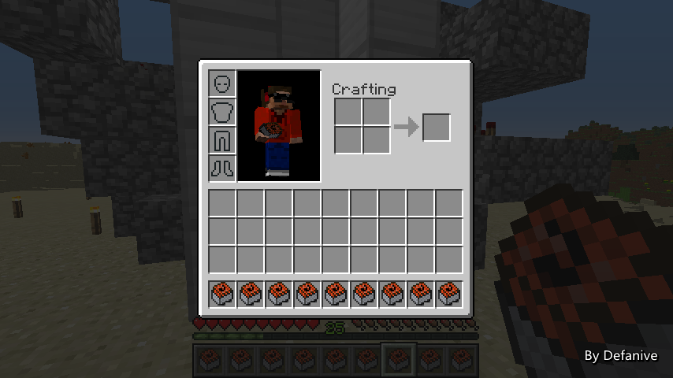
29925楼
2014-07-09 22:36
defanive2
无尽黑夜
14
往发射器中填入9个TNT矿车
——来自 MCLive
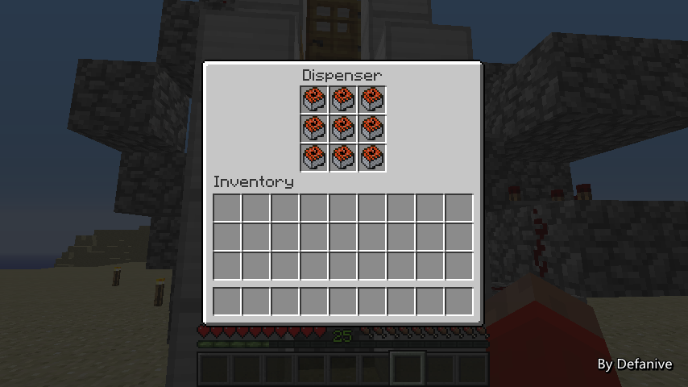
29926楼
2014-07-09 22:37
defanive2
无尽黑夜
14
打开拉杆，可以听到TNT矿车被加载到铁轨上
——来自 MCLive
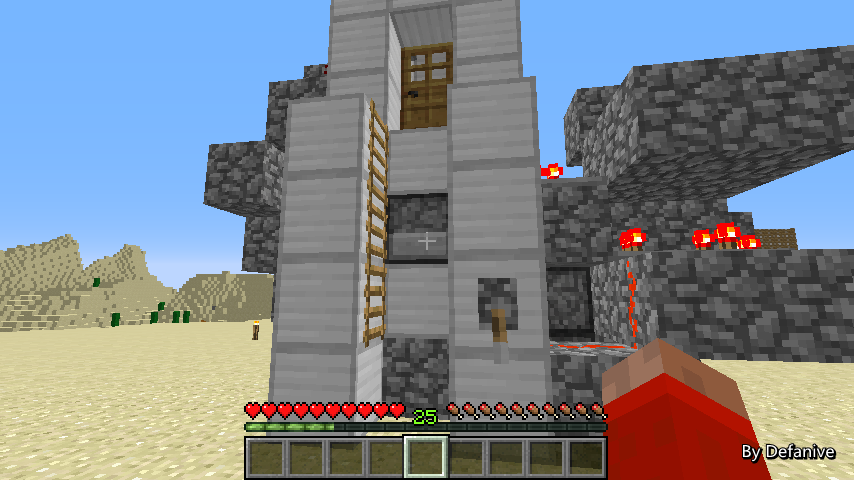
29927楼
2014-07-09 22:37
defanive2
无尽黑夜
14
关闭拉杆之后，可以看到TNT矿车已经到位了
——来自 MCLive
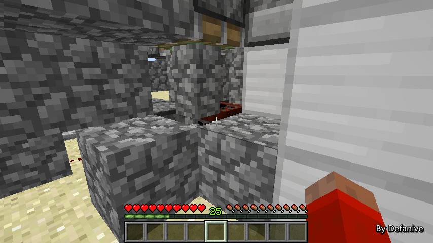
29928楼
2014-07-09 22:38
defanive2
无尽黑夜
14
接下来我们进入发射舱，贴着两边的陷阱门
按下按钮，就发射啦！
——来自 MCLive
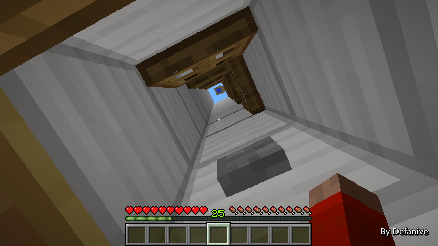
29929楼
2014-07-09 22:38
defanive2
无尽黑夜
14
可以看到我们很成功的被发射到了一定高度
由于9个TNT矿车数量还不算很多
所以说发射高度有限
——来自 MCLive
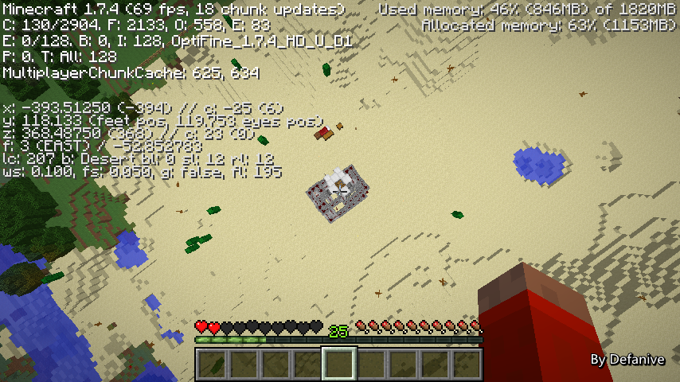
29930楼
2014-07-09 22:40
defanive2
无尽黑夜
14
落地之后可以看到重新落到了发射点
可见发射的精度还是很高的
PS 在更大数量的TNT矿车发射下
我们会需要把发射管延长，才能保证发射精度
——来自 MCLive
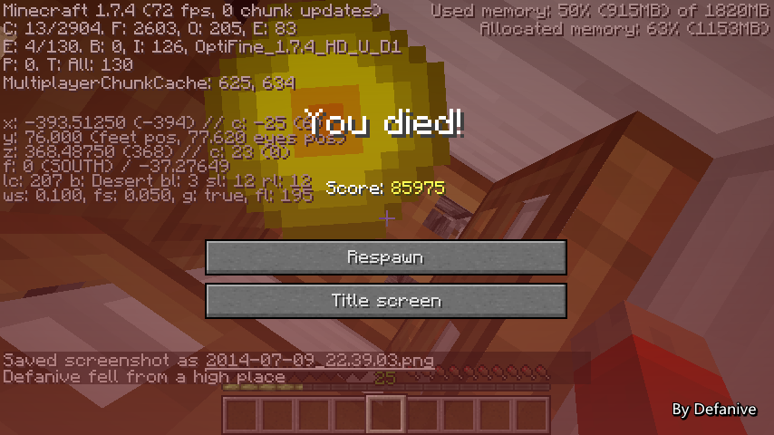
29932楼
2014-07-09 22:41
defanive2
无尽黑夜
14
在漏斗里我们取回了7个矿车以及9个TNT
TNT总是可以保证不被破坏的，所有TNT都可以回收
而矿车则会损失一小部分
不过有了刷铁机之后，损失矿车也无所谓了
更重要的TNT保住就好
发射成本已经非常低了
——来自 MCLive
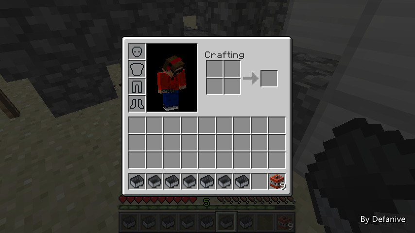
29933楼
2014-07-09 22:43
defanive2
无尽黑夜
14
好吧今天就播到这里了
新的火箭发射站核心部分已经做好可以使用了
还欠缺的只是外部装饰和空间站的建造
相信不久就可以完成整个工程的建造，非常的赞！
先播到这里了，大家88！
——来自 MCLive
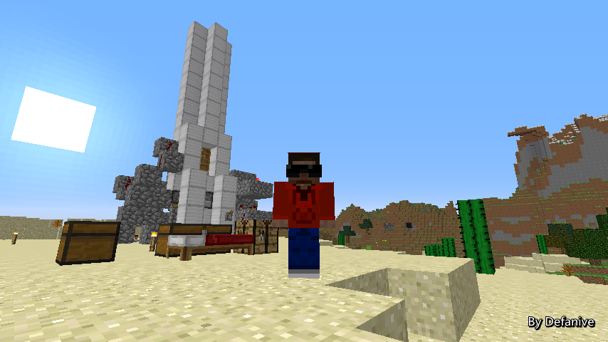
29934楼
2014-07-09 22:46
defanive2
无尽黑夜
14
刚刚网络持续爆炸了好一会
一会看球，所以现在把自动应答给做了吧
29563L，
@ninzeroth
：
D大，如果有些重大跟新需要你跑很远（比如地牢）你会开新存档吗？
暂时来说不会的。。虽然说生存到了后期资源充足，有些时候觉得没什么好做的，而前期发展非常有趣，玩腻了开新存档的确是个不错的主意。。但是这个存档里还有很多尚未完成的工程，除了大家观众很希望看到这些工程完工以为，我个人也很享受把一个工程从想法到实现的过程，现在就放下这个存档会留下太多遗憾。。另外一点是，除了未完成的旧工程以外，不少新工程（很多是已经完成了设计只待实施的）仍然在排期中，而如果新开存档的话不一定有足够的物资，需要发展得很后期才能继续这些想法
很多人说物资太多了MC生活就没有什么意义了。。其实MC本来就是一个没有意义的游戏，只有你自己给自己设定了目标，玩MC的每一分钟才会有乐趣。。人生也是如此（此处省略一堆哲理废话）
29583L，
@黄猿光速无解
：
defanive，请问你对1.8的村民交易新机制有何看法，打算采取什么措施
在1.8预览版刚进行村民修改的时候就研究过了，不知道还有多少研究的结果是仍然可用的，毕竟预览版每一版本都会有很大的变化。。不过的确是研究过的，有一些大致的想法和计划了。。新交易机制的话个人觉得更加放松了交易的限制，对比以前艰辛的刷无限纸，1.8中几乎任何交易都是无限交易了。。虽然说不少交易都被一定程度上的削弱了，不过总体来说村民交易感觉更好了。。还需等1.8出来之后再详细看吧
29945楼
2014-07-10 03:33
defanive2
无尽黑夜
14
最近重新整理了一下无限射程TNT大炮的一些资料
而得益于MCP 9.08的发布，写了MOD优化TNT爆炸
成功的刷新了TNT大炮射程的世界纪录，达到了174.8km
http://tieba.baidu.com/p/3153457147
里面有更详细的介绍以及存档下载
电脑更好的同学不妨来破一下世界纪录哦
29946楼
2014-07-10 03:35
defanive2
无尽黑夜
14
经过一段时间断断续续的清理本帖的大部分水楼终于处理完了
（当然楼中楼的回复没有清理，毕竟数量太多了）
总共删掉了5040楼，也就是168页的水楼
清理完之后帖子就只剩760页啦，减肥成功！
完成以后就可以归还小吧权限了，以后靠一天15个删贴应该可以处理掉大部分的水
希望大家不要在这个帖子里面水了，非常影响其他观众观看
虽然我也希望这个帖子能有1000页，但是我更希望这1000页里面的回复都是认真用心的
PS 今天下午的时候可能会直播
30373楼
2014-07-30 08:40
defanive2
无尽黑夜
14
到下午才直播的话，顺便问一下大家一个问题
在比较复杂的工程建造时，建造过程要不要直播出来呢？
直播：
旧的工程有小黑塔、树场V3，比较新的有凋零造石机、炫富机等
优点在于可以一步一步展示建造过程
讲其中的建筑步骤，难点，注意事项等
缺点在于建造过程直播时间比较长，并且直播内容相对比较少
由于是在生存建筑中，很难有很好的角度截图讲解电路/原理
由于建造时间长，可能要分两次直播才能够完成一个工程
第一次直播建造过程，第二次进行详细的电路/原理讲解
这样的话要到第一次直播结束才能看到成品，第二次直播结束才能了解到电路/原理
不直播：
旧的工程有刷怪塔生存者模式、END瞬移装置，新的工程有石英半砖转换器等
优点在于直播开始时就可以看到成品，立即看到运行效果
看完效果之后可以立即进行电路/原理的讲解，马上可以了解整个工程的核心思想
缺点在于有点失去了直播的味道，和生存世界见面的时间也少了，更多的倾向了讲解
而且无法看到建造过程
当然啦，可以一边建造一边讲解的工程，例如最近的火箭发射站，肯定是会一边做一遍讲解的
这个问题关注的时候建造过程比较长但又不是重复工作，而过程中又因为环境无法进行讲解的工程
想看一下大家的想法，更喜欢哪一种直播方式
个人的话，不直播建造过程可以自己提前做好工程，并且在一次直播中讲完整个工程
直播的话，边直播边打字会影响建造速度
但是两种直播方法对我影响都不大，看大家的喜好如何
30377楼
2014-07-30 10:07
defanive2
无尽黑夜
14
之前计划好了今天做一次大直播
分成两段，下午的时候做一段，晚上再做第二段
结果一整个下午都停电断网了，很可惜没办法直播
虽然说晚上一次性把计划的直播完工程量会很大
不过鉴于很久都没有直播了，今晚就加长版直播争取完成计划吧
好吧，超长直播开始咯！
Yaaay！
——来自 MCLive
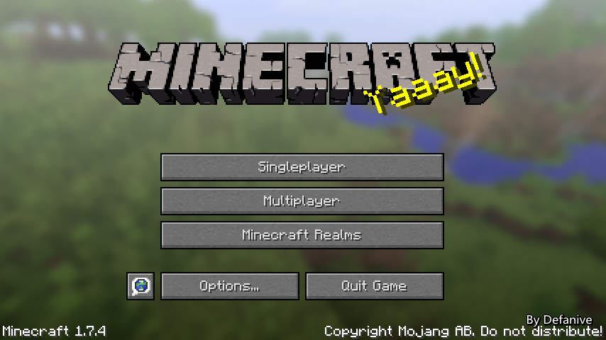
30426楼
2014-07-30 20:17
defanive2
无尽黑夜
14
首先是日常猪人塔的进度报告
前两层已经彻底完成了！
由于挡板也完成了浇筑，最后的第三和第四层工作量相对就少很多
指日可待啦！
目前猪人塔的刷怪速度没有仔细测量
不过已经达到了杀完上一批收拾完金粒又要杀下一批的节奏
感觉非常不错
——来自 MCLive
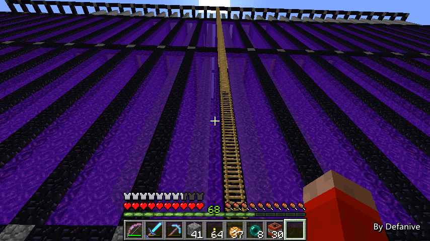
30429楼
2014-07-30 20:26
defanive2
无尽黑夜
14
今天的大工程是什么呢？
是期待已久的凋零塔啦！
自从在1.6理清了地狱上方刷凋零骷髅的原理之后
（原帖：tieba.baidu.com/p/2645948265）
由于不确定1.7是否会继续存在，所以没有立即动工
而1.7后由于MCP迟迟没有发布
一直拖到现在才有机会开始这个工程
前两天经过很多测试设计之后，终于确定了一个最终设计
可以动工啦！
——来自 MCLive
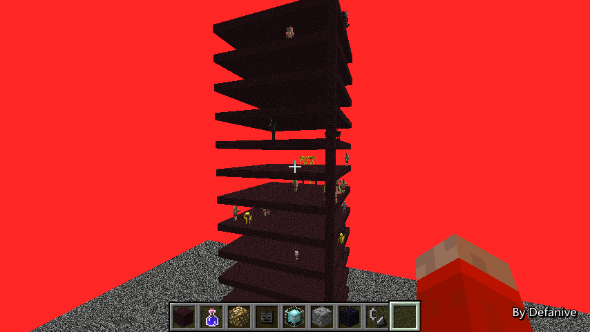
30433楼
2014-07-30 20:31
defanive2
无尽黑夜
14
得益于MCP 9.08的发布，现在可以在1.7.10上查看MC源码及写MOD了
于是就写了1.7.10下的显示地狱堡垒列表MOD
将生存世界复制一份并调成创造模式，用此MOD提供的指令/showfortress
就可以显示出当前的地狱堡垒hashmap内容
简单的来说，只有在hashmap顶端的第一个堡垒是可以在基岩上刷凋零骷髅的
而顶端是哪个堡垒生存下不得而知，只能一个一个测试
或者通过33x33chunk内孤立堡垒来保证堡垒是在顶端
总之这个MOD只是为了方便找到堡垒而用的
同样的目的纯生存中也可以实现，只不过不断测试相对耗时间而已
晚点或者明天会单独开个帖子把这个MOD发出来
具体在帖子里会有详细的介绍
——来自 MCLive
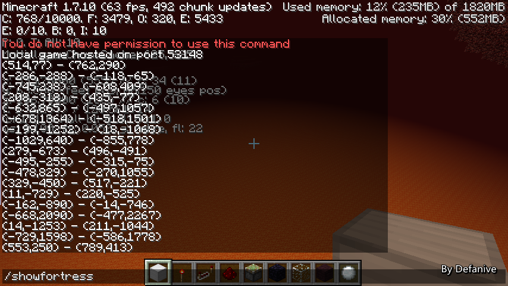
30438楼
2014-07-30 20:44
defanive2
无尽黑夜
14
从上一张图的MOD里面可以看到处于顶端的堡垒是在
(514,77)-(762,290)
很久以前地狱基地有一条向上的楼梯去基岩层上杀凋零
用箭+TNT的BUG打穿了基岩之后现在有一条直上的通道了
接下来就往目标区域去吧！
PS 这里只是临时交通，以后会做更好的交通系统
——来自 MCLive
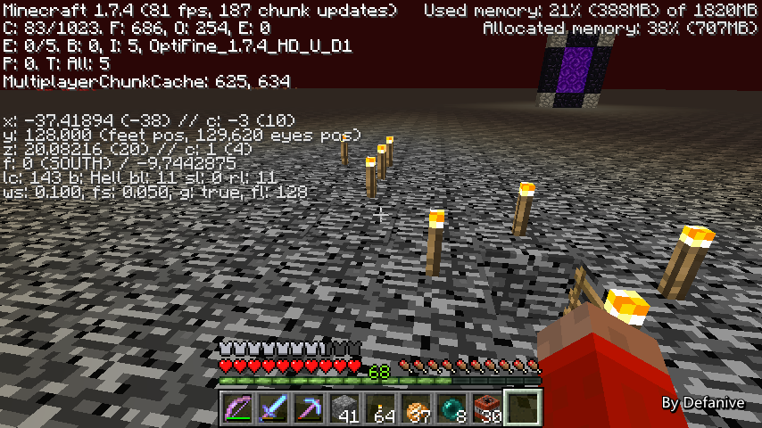
30440楼
2014-07-30 20:51
defanive2
无尽黑夜
14
上面的箱子装了大部分的红石物品
耗资还算可以接受，毕竟是个刷怪塔嘛
只是做粘性活塞的时候史莱姆球用完了
又跑去沼泽刷了几个晚上
——来自 MCLive
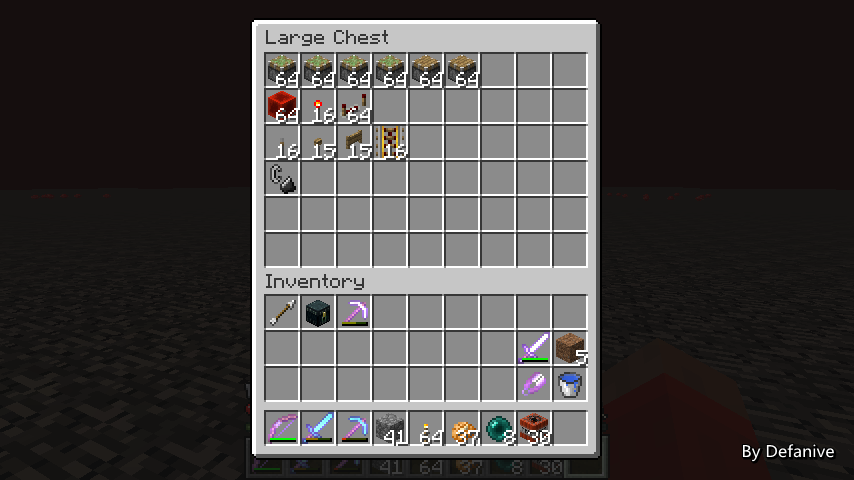
30447楼
2014-07-30 20:57
defanive2
无尽黑夜
14
下面就是建筑材料，同样也不算很大的耗资
不知道石头够不够，27组是预估的
玻璃的话是为了看起来更漂亮，可以看到里面的情况
——来自 MCLive
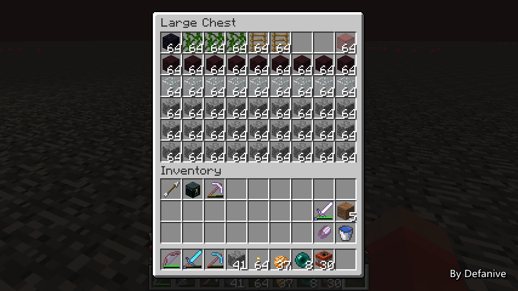
30451楼
2014-07-30 21:02
defanive2
无尽黑夜
14
鉴于大家更偏向于建造过程和原理都直播的话
凋零塔也就打算现做现讲啦
具体的电路什么的还是要到创造里面讲才清晰
不过在建的时候争取能够给大家一个清晰的结构概念
我的凋零塔设计从上到下分为三个部分：刷怪，集中，过滤
既然我们是从地面开始建起，那么就是先做过滤系统了
——来自 MCLive
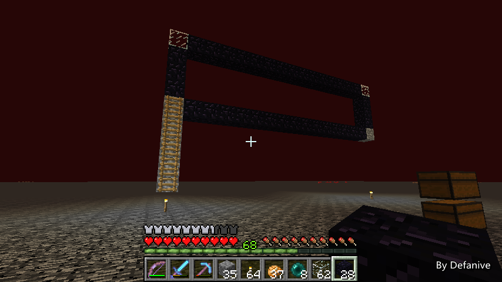
30456楼
2014-07-30 21:06
defanive2
无尽黑夜
14
过滤系统的目的是将凋零骷髅过滤出来，而其他怪物过滤掉
整个过滤系统就被这个地狱门一分为二
地狱门的右边是最终凋零骷髅的归属点
被过滤出来的凋零骷髅会掉落到右边
然后被活塞推入到地狱门里面，进入主世界
而非凋零骷髅则会被过滤到左边，直接被推下来despawn
——来自 MCLive
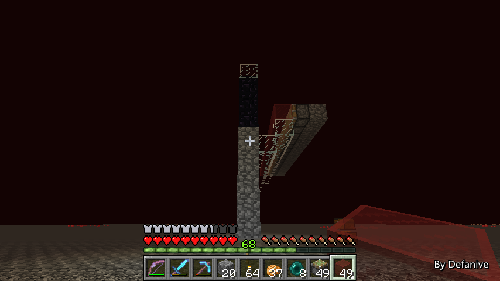
30460楼
2014-07-30 21:12
首页
上一页
291
292
293
294
295
296
296
297
298
299
300
301
下一页
末页